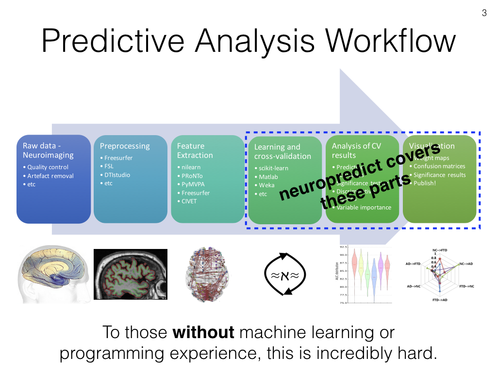

About¶
Automatic estimation of predictive power of commonly used neuroimaging features as well as user-defined features.
Goals of the tool¶
The aim of this python module would be to automatically assess the predictive power of commonly used neuroimaging features (such as resting-state connectivity, fractional anisotropy, subcortical volumes and cortical thickness features) automatically read from the processing of popular tools such as FSL, DTIstudio, AFNI and Freesurfer, and present a comprehensive report on a given dataset. It is mainly aimed (to lower or remove the barriers) at clinical users who would like to understand what features and brain regions are discriminative in their shiny new dataset before diving into the deep grey sea of feature extraction and optimization.
Neuropredict is part of a larger initiative to ease and standardize predictive analysis - learn more.
neuropredict sounds similar (on the surface) to other software available, such as scikit-learn (which is used underneath), however our aim here is to lower the barriers as much as possible, or remove them altogether and make machine learning seamless! For example,
- You don’t have to code when you use neurpredict - saves you a lot of headache with development and debugging!
- You don’t have to learn how the machine learning toolkits work and their APIs. This can be daunting and time-consuming, and can likely lead to bad choices made in terms of how proper cross-validation is done.
- Toolkits like scikit-learn are geared towards developers (focusing on the API to support most generic uses), but not focused easing your workflow, esp. when analyzing many feature sets.
- Comprehensive analysis of misclassfied subjects (histogram at top right in figure below) in different pairs of classes is not in the interest of other toolkits and not possible without significant rewriting of many underlying components of scikit-learn.
- Thorough analysis of misclassification rates for different feature sets (radar plot at bottom right in figure below) is not possible in scikit-learn without significant development (who only provide basic metrics of classifier performance)..
- Methods and tools for statistical comparison of multiple features (and models) is missing in other toolkits, and which is a priority for neuropredict.
All you would need to provide are commonly used features (such as a Freesurfer output directory) and obtain an easy to read report (see below), along with well-packaged export of performance metrics (for sharing and posthoc comparison) on the predictive power of the features they are interested in.
It is primary geared towards neuroscience data (where the need for machine learning is high) offering readers for popular tools. However, it is not restricted to neuro-data, you could input any arbitrary set of features (from astrophysics, biology or chemistry).
Happy machine learning!
And neuropredicting.
Check the Usage and examples and Input formats pages, and let me know your comments.
Thanks for checking out. Your feedback will be appreciated.